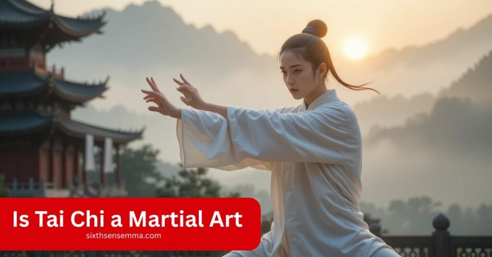
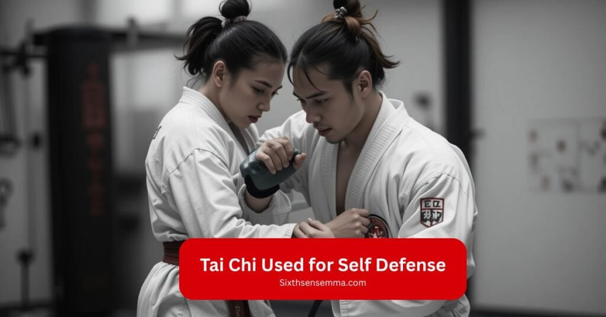
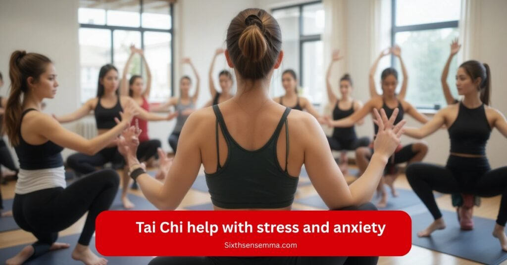

Is Tai Chi a Martial Art? What You Need to Know

Is Tai Chi a Martial Art? Absolutely. Many dismiss Tai Chi as just slow movements for relaxation, but this Chinese tradition rooted in Taoist philosophy and the Ming dynasty is a profound self-defense system. As an internal martial art, it emphasizes combat efficacy through redirecting energy, joint locks, and throws, all while maintaining harmony between body, mind, and spirit.
I’ve felt its real life application: those meditative movements train timing, sensitivity, and internal strength (or qi), turning softness into power.
Beyond close range combat, it’s a holistic development tool blending breathing, awareness, and ancient philosophies for personal well being. Sites like sixth sense mma dive deeper, but true martial artistry lies in its deliberate movements, energy control, and real techniques that build precision, balance, and structure.
What Sets Sixth Sense MMA Apart in Tai Chi Martial Arts Training
At sixth sense mma , we strip away the myths and focus on Tai Chi as a practical self defense system with real life application. Unlike traditional schools that emphasize only forms, we teach hands on martial training how to use energy control, structure, and precise timing for close range combat.
Here, you’ll learn real techniques that work, whether redirecting force or applying locks, all while staying true to Tai Chi’s core principles. This isn’t theoretical; it’s combat tested skill, refined for modern practitioners who want results.
Tai Chi Basics A Deeper Look Into the Practice
Born in ancient China during the 16th century, Tai Chi blends martial arts principles with internal energy cultivation to create a unique health practice. While its modern practice often focuses on health benefits, the art was originally designed for confrontation, using subtle balance control to neutralize opponents.
What makes Tai Chi special is how it transforms slow movements into powerful self defense every gentle motion trains your body to harness and redirect force. Whether you’re seeking better health or practical martial artistry, Tai Chi’s deliberate movements strengthen both body and mind in a way few other disciplines can match.
Where Tai Chi Comes From A Look at Its Origins
Rooted in ancient practice and shaped by Chinese values, Tai Chi emerged as more than just a self defense technique it became a cultural bridge between martial prowess and spiritual enrichment.
Born from Chinese martial arts and influenced by Confucian philosophies, this art uses fluid movements to neutralize attacks, blending physical skill with mental health benefits.
Its historical context reveals a holistic approach to personal development, often practiced in communal settings where its transformative power could be shared. Beyond combat, Tai Chi carries deep cultural significance, preserving the wisdom of ancient China while adapting to modern life.
Different Styles of Tai Chi From Chen to Sun
Tai Chi’s five main styles Chen, Yang, Wu, Sun, and Hao each offer unique characteristics while sharing core principles. From Chen’s dynamic explosions to Sun’s smooth follow steps, these styles evolved across centuries to suit different practitioners’ needs.
| Feature | Chen Style | Yang Style | Wu Style | Sun Style | Hao Style |
|---|---|---|---|---|---|
| Origin | 1600s (Chen Wangting) | Early 1800s (Yang LuCh’an) | Late 1800s (Wu Jianquan) | Early 1900s (Sun Lutang) | Mid-1800s (Wu Yuxiang) |
| Movements | Explosive (Cannon Fist), spiraling | Large, graceful frames | Compact, leaning postures | Follow step, agile transitions | Small, precise circles |
| Pace | Fast slow alternation | Slow, even tempo | Moderate with pauses | Fluid continuous flow | Very slow, deliberate |
| Stance | Low, dynamic | Upright, wide | Diagonal lean | Natural, mobile | Compact, upright |
| Best For | Martial artists | Beginners, rehab | Close range defense | Joint health | Internal refinement |
Core Principles That Shape Tai Chi Practice
At its heart, Tai Chi is built on timeless principles that blend martial efficacy with holistic wellness. Rootedness forms the foundation maintaining physical stability while cultivating mental equilibrium. The art teaches yielding not as weakness, but as strategic depth to neutralize energy through precise adaptability.
Every movement integrates breath synchronization, creating a mindfulness practice that dissolves tension release into liveliness. These historical roots from ancient China emphasize patience transforming slow motions into powerful health applications. Whether for combat or calm, these principles make Tai Chi uniquely profound.
Can Tai Chi Really Be Used for Self Defense?
Don’t let the gentle exercise fool you Tai Chi’s martial heritage makes it surprisingly effective for self defense. At its core, it teaches you to neutralize threats not with brute force, but through strategic positioning and attack redirection.

Techniques like ward off and roll back train you to absorb strikes while maintaining calm under pressure, using an opponent’s intention against them. In practical scenarios, practitioners learn to deflect strikes and press forward with precise timing, proving that true power comes from control rather than speed. This is self defense refined through centuries of combat wisdom.
Weapon Forms and Techniques in Traditional Tai Chi
Tai Chi weapons extend the art’s principles into combat tools, blending fluidity with martial power. Each weapon refines specific skills from the jian’s precision to the Guandao’s sweeping force.
Weapons & Techniques
- Jian : Double edged sword for precision thrusts & fluid circles (32/49 forms)
- Dao : Single edged broadsword specializing in powerful chops & sweeps (22 moves)
- Long Pole: 7-8 foot pole with explosive roots and pushing skills (King of Weapons)
- Guandao : Heavy blade for circular slashing (56 move form with tassel)
- Fan/Cloth: Deceptive hidden movements & entangling techniques
Techniques & Benefits by Weapon
How Weapons Enhance Your Practice
Incorporating weapons elevates Tai Chi beyond gentle exercise into power development. Weapons training becomes a moving meditation that builds mental clarity every parry and thrust requires absolute focus sharpening. Whether you’re drawn to the challenge of the spear’s length or the precision of swordplay, these ancient tools unlock deeper layers of Tai Chi’s martial heritage.
Choosing a Weapon
Tai Chi weapons each bring a unique flavor to your practice, catering to different goals and skill levels. For accessible training, the fan offers graceful, low impact movements that enhance finesse while providing light cardio.
The jian (straight sword) demands precision, its silk smooth cuts perfecting body alignment, while the dao (broadsword) adds complexity with its dynamic arcs. Whether you prioritize gentle exercise or martial precision, each weapon deepens Tai Chi’s principles in distinct ways.
How Tai Chi Stacks Up Against Other Martial Arts
Tai Chi distinguishes itself from other martial arts through its emphasis on internal energy, fluid redirections, and harmony of mind and body. Below is a clear comparison of key differences:
| Aspect | Tai Chi | Karate/Taekwondo | Judo/Brazilian Jiu Jitsu |
|---|---|---|---|
| Primary Focus | Internal energy, redirection | Powerful strikes, kicks | Throws, ground fighting |
| Movement Style | Slow, fluid, circular | Fast, linear, rigid | Dynamic, leverage based |
| Power Source | Whole body coordination, qi | Muscle strength, speed | Technique, positioning |
| Self Defense | Yielding, neutralizing force | Blocking, counter striking | Takedowns, submissions |
| Philosophy | Harmony, soft over hard | Discipline, direct impact | Maximum efficiency, minimal effort |
| Training | Forms, push hands, meditation | Kata, sparring, pad work | Randori, positional drills |
Philosophical and strategic differences
Tai Chi stands apart through its harmonious approach that prioritizes mindfulness cultivation and spiritual growth alongside martial efficacy. Where most arts emphasize external strength and competition focus, Tai Chi follows Daoist principles of softness overcoming hardness using an opponent’s force against them.
Its combative origins evolved into a practice valuing inner peace as much as physical prowess, blending cultural influences into every movement. This creates a martial art that trains you to win conflicts by first mastering yourself, making it uniquely valuable both as combat training and life philosophy.
Training intensity and physical demands
While Tai Chi lacks the high intensity workouts and explosive movements of arts like Muay Thai or Boxing, its training offers unique physical challenges. Through repetitive drills and movement flow practice, it develops remarkable balance enhancement and agility training at a controlled pace.
The art’s defensive maneuvers train the body to move with precision rather than brute speed training, while maintaining mental tranquility a stark contrast to most combat sports. This makes Tai Chi uniquely accessible across fitness levels while still demanding deep muscular control and endurance.
Effectiveness in practical combat scenario
Tai Chi holds its own in combat through unique principles rather than brute force. Unlike striking arts that rely on speed/power, Tai Chi specializes in pressure testing techniques through push hands sparring methods a complementary perspective to conventional fighting.
Its focus on redirection and balance disruption proves surprisingly effective against larger opponents. While it may lack the flashy kicks of Taekwondo or the ground game of Jujutsu, trained practitioners demonstrate remarkable ability to neutralize attacks using subtle body mechanics.
The art’s combat viability shines when pressuremtested through progressive sparring drills that bridge forms to real application.
Tai Chi’s Place in Modern Life
Tai Chi seamlessly blends ancient wisdom with modern science, offering proven benefits for both body and mind. Clinical trials demonstrate its effectiveness for improving stability, leg strength, and fall prevention, while push hands research validates its martial applications.
This mindful practice enhances muscle coordination and rootedness, making it equally valuable as physical therapy, cross training, or stress relief truly a holistic discipline for contemporary living.
Tai Chi and Mental Well Being
Tai Chi isn’t just movement it’s harmonious living in motion. This ancient practice uniquely blends stress reduction with resilience building, creating a powerful health martial synergy that nurtures both body and mind. As you flow through the forms, the focus enhancement required becomes a moving meditation, quieting mental chatter while strengthening emotional wellbeing.
The slow, intentional movements teach you to process challenges with calm precision a skill that translates off the practice floor into daily life. What begins as physical exercise quietly transforms into a profound tool for mental clarity and balanced living.
Does Tai Chi help with stress and anxiety?
Tai Chi reduces stress by blending breath focus, mindfulness techniques, and relaxation methods into slow, flowing movements. Its disciplined approach trains both body and mind, promoting calmness and emotional well being proven to lower anxiety while improving mental clarity naturally.

Can it improve focus and clarity?
Yes. Tai Chi acts as a movement meditation, combining mindful breathing with precise motions to train sustained concentration. This practice naturally enhances cognitive clarity by quieting mental chatter while attention sharpening studies show improved focus comparable to seated meditation, but with added physical benefits.
How it supports emotional balance over time
Tai Chi cultivates an unshakeable presence that becomes an emotional anchor in daily chaos. Through consistent practice, its rhythmic movements and breathwork build a steady presence training your nervous system to respond to stress with calm clarity rather than reactivity.
This creates lasting resilience, helping you process emotions with grounded awareness instead of being swept away by them.
Practical Considerations for Beginners
Tai Chi is beginner friendly but requires proper guidance. Start with comfortable clothing, flat shoes, and a qualified instructor. Focus on learning basic postures and breathing before advancing. Consistency matters more than intensity short daily practice beats long irregular sessions.
What kind of clothing is appropriate for a Tai Chi class?
Choose flexible fabrics (like breathable cotton) for ease of movement avoid tight materials or heavy materials that restrict flow. Loose, comfortable clothing and flat shoes help maintain stability and comfort during practice.
Can older persons and children do tai chi?
Yes Tai Chi is a lifelong practice with no strict age restrictions, offering unique child benefits (like improved focus and motor skills) while serving as ideal health promotion for older adults (enhancing balance and joint health). Its adaptable intensity makes it equally valuable for young learners and seniors just modify movements as needed.
How long does it take to get good at Tai Chi?
Beginners often feel benefits (like relaxation or better balance) within weeks, but true depth develops over consistent practice:
- 3-6 months: Basic forms feel natural
- 1-2 years: Fluid transitions and improved energy flow
- 5+ years: Advanced martial applications and effortless precision
Competitive Tai Chi Is It Also a Sport?
Yes! Tai Chi thrives in push hands competitions and form events, judged on technical skill, energy expression, and performance standards. While some debate if contests preserve the art’s integrity, they undeniably sharpen opponent sensitivity and strategic thinking blending martial rigor with sportive challenge.
Why Choose Sixth Sense MMA for Real Tai Chi Martial Arts Training
At sixth sense mma , we bridge tradition with modern training to deliver combat ready Tai Chi that works. Unlike theoretical approaches, our certified instructors teach combat tested techniques in small groups, ensuring personalized feedback.
With flexible schedules and progress tracking, we cater to all levels from beginners to advanced practitioners in a focused environment that prioritizes real world application. Here, you don’t just learn forms; you develop martial skills that hold up under pressure.
Benefits:
- Combat Proven Techniques: Learn real world Tai Chi from certified instructors with combat tested methods not just theory.
- Personalized Attention: Small groups ensure tailored feedback for faster progress.
- Flexible & Structured: Flexible schedules fit your life, while progress tracking keeps you motivated.
- Modern & Effective: Our focused environment blends traditional Tai Chi with modern training for combat ready skills.
- For All Levels: Whether beginner or advanced, our system adapts to your growth.
Customer Reviews
“Their focus on internal power and body control is next level. You feel the difference in every session.”
Jason M. Austin, TX
“I’ve trained at other Tai Chi schools in the U.S., but this is the first place where it truly felt like a martial art.”
Rachel S. San Diego, CA
“Sixth Sense MMA breaks all the myths about Tai Chi being ‘soft.’ Their method is practical, rooted, and effective.”
Michael R. Boston, MA
“From the first class, I could tell they treat Tai Chi seriously as a fighting art. It’s structured, real, and well taught.”
David L. Chicago, IL
📞Ready to Take a Martial Approach to Learning Tai Chi?
Have questions or want to join a class? Reach out to us here . we’re here to help you get started.
Conclusion
Tai Chi is not just an ancient art it’s an effective system of rooted techniques that function as a practical method for self defense, health, and mental clarity. Beyond its graceful forms lies a fighting art refined over centuries, blending softness with precision. Whether for combat, stress relief, or personal growth, Tai Chi’s depth ensures lifelong discovery.
FAQ’s
Yes, Tai Chi is a legitimate martial art rooted in Chinese self-defense traditions. While often seen as a meditative practice, it includes techniques like joint locks, energy redirection, and throws, making it effective in real combat situations.
Tai Chi emphasizes internal energy, redirection, and fluid motion rather than speed and brute strength. Unlike striking or grappling arts, Tai Chi focuses on balance, timing, and using an opponent’s energy against them.
Tai Chi has five main styles: Chen, Yang, Wu, Sun, and Hao. Each varies in stance, tempo, and movement characteristics. For example, Chen includes explosive motions, while Yang is slow and graceful—ideal for beginners.
Absolutely. Techniques like “ward off” and “rollback” are designed to deflect strikes and redirect energy. With proper training, Tai Chi equips practitioners to stay calm, absorb force, and respond with precise, controlled movements.
Tai Chi is built on principles like rootedness, yielding, breath control, and body-mind unity. These principles support both martial effectiveness and personal wellness, transforming slow movements into powerful, intentional techniques.
Yes, Tai Chi is highly adaptable and safe for all ages and fitness levels. Movements can be modified to suit beginners, seniors, or children, making it a life-long discipline that promotes physical and mental well-being.
Weapons like the jian (sword), dao (broadsword), spear, and fan extend Tai Chi’s martial applications. Each weapon trains specific skills—such as balance, coordination, and energy control—while deepening your understanding of movement and combat principles.
Initial benefits like better balance and relaxation can be felt within weeks. With 1–2 years of regular practice, students gain fluidity and deeper energy flow. Mastery of martial applications may take 5+ years of consistent training.
Train with us in Coppell
The first class is free. Shorts, a t-shirt and a water bottle. We lend the rest.
Book a free class